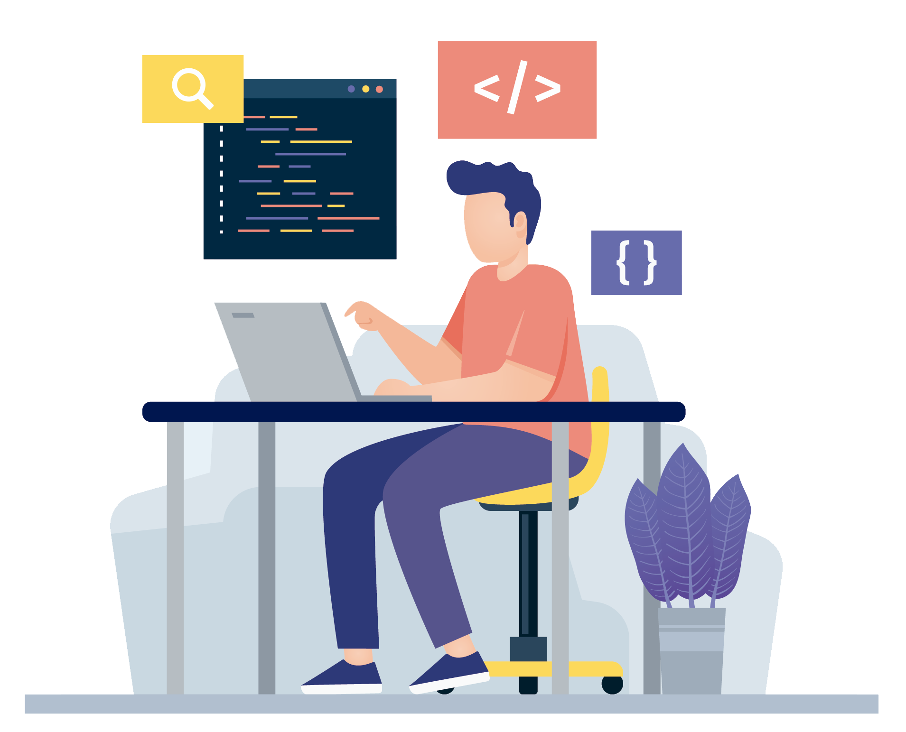

<section class="hero">
  <div class="container-general">
    <div class="hero__container">
      <div class="hero__container-left">
        <p class="hero__subtitle">cursos aprendidos</p>
        <h1 class="hero__title">Desarrollo e ingeniería</h1>
        <p class="hero__description">
          Este sitio web es una recopilación de todo lo que he aprendido en mi
          camino de ingeniería de sistemas, especialmente en el campo del
          desarrollo web. Lo que aquí se plasma son los cursos realizados en
          <a class="link link--refe" href="https://platzi.com" target="_blank"
            ><strong>platzi</strong></a
          >, conocimientos de la
          <a
            class="link link--refe"
            href="https://www.unisimon.edu.co/"
            target="_blank"
            ><strong>universidad Simón Bolivar</strong></a
          >, entre otras web más.
        </p>
      </div>
      <div class="hero__container-right">
        <a
          href="https://www.freepik.es/fotos-vectores-gratis/tecnologia"
          target="_blank"
        >
          
        </a>
      </div>
    </div>
  </div>
</section>
